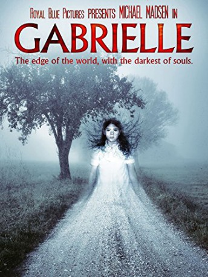

#8021 Gabrielle - (K)eine ganz normale Liebe
 
 IMDB-Wertung: 4.0 / 10
IMDB-Wertung: 4.0 / 10  Metascore: 0
Metascore: 0 
When his publishers tell him he owes them one last book, Edward Sheehan (Michael Madsen) has little choice but to isolate himself in a cabin on a New England lake. Though his fans have come to expect truly terrifying stories from the mind of Edward, they are unaware of the morbid method he takes to get them on paper. He fears the inner depths he'll have to reach in order to make it to the final chapter. With only himself and his demons, he slowly drives himself crazy as he creates the most sinister book of his career: Gabrielle.
Jahr: 2013
Dauer: 103 Minuten
FSK: 12
Land: USA Studio: Hannover HouseTonspuren:
Untertitel:
Auflösung: 1080p (1920x1040) Größe: 7045 MB
Genre: Thriller, Drama
Regisseur: Michael Conroy
Drehbuch: Michael Conroy
Soundtrack:
Darsteller:
 Michael Madsen als Edward Sheehan
Michael Madsen als Edward Sheehan- Michael Anthony Coppola als Nick Barrows
- Paul Lussier als Frank Larsen
- Victoria Hogan als Reporter
- Alexis Albert als Gabrielle
- Jane Button als Victoria Barrows
- Megan Phelps als Lily Barrows
- Jody Orrigo als Anthony Barrows
- John Picado als Dr. Helm
- Jason Standley als Ed O'Brien
- Pat Tierney als Prison Guard
- Lorene Zammuto als Intake Nurse
Datei: X:\2013(G-H)\Gabrielle - (K)eine ganz normale Liebe (2013, FSK12, 1920x1040).mkv seit 16.01.2018
Festplatte: HD 2012(N-Z)-2013(A-H)
 Es gibt insgesamt 43 Filme in der Gruppe '2013(G-H)'
Es gibt insgesamt 43 Filme in der Gruppe '2013(G-H)'